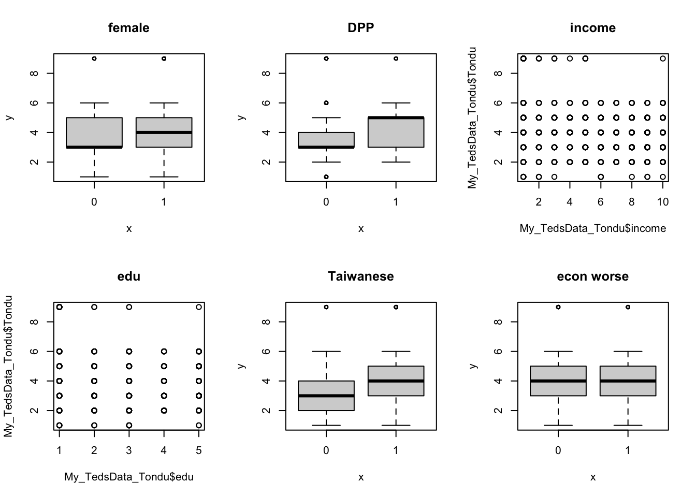
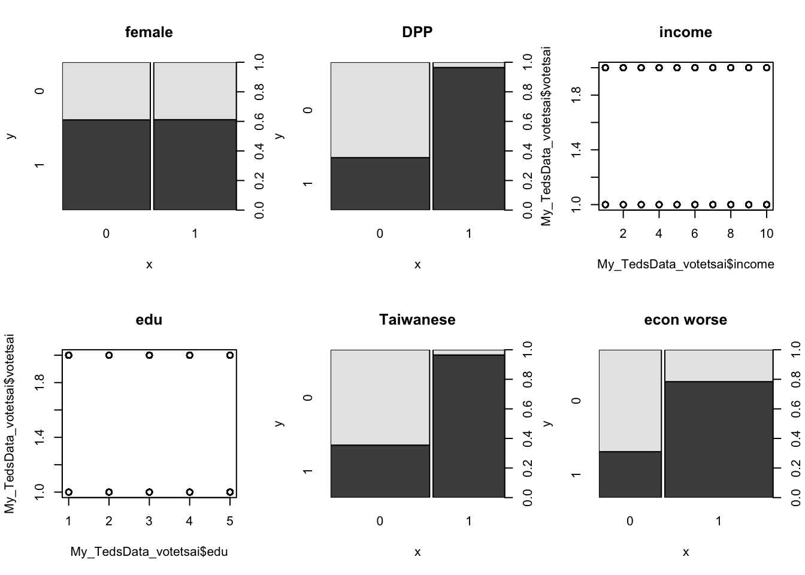
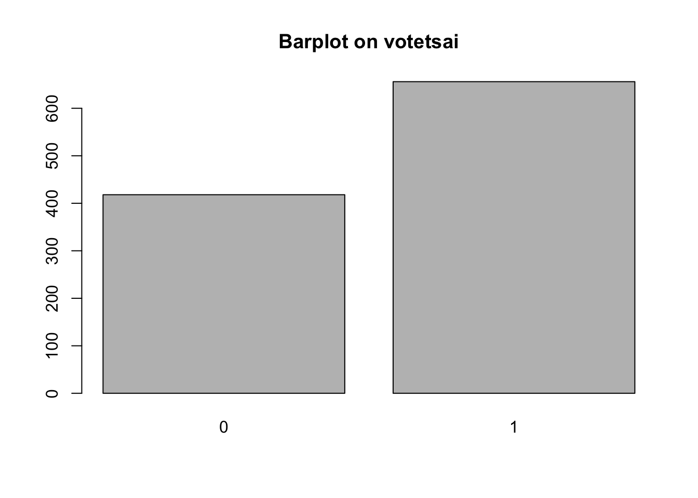
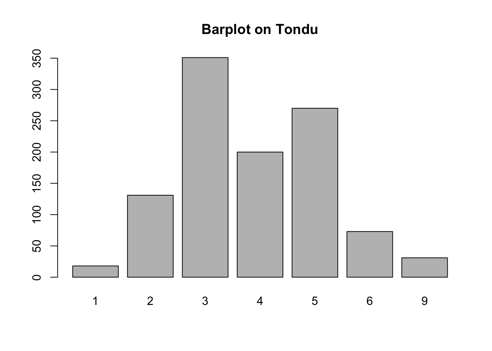

library(haven)
TEDS_2016 <-
read_stata("https://github.com/datageneration/home/blob/master/DataProgramming/data/TEDS_2016.dta?raw=true")Assignment2
Loading necessary packages and the data
Dealing with missing values
To deal with missing values, we checked if the data includes missing values and remove all the rows with any missing data
sum(is.na(TEDS_2016))[1] 3008TEDS_2016_complete <- TEDS_2016[complete.cases(TEDS_2016), ]Converting categorical data into factors and numerical into numbers
TEDS_2016_complete$age <- as.numeric(TEDS_2016_complete$age)
TEDS_2016_complete$income <- as.numeric(TEDS_2016_complete$income)
TEDS_2016_complete$edu <- as.numeric(TEDS_2016_complete$edu)
TEDS_2016_complete$female <- as.factor(TEDS_2016_complete$female)
TEDS_2016_complete$DPP <- as.factor(TEDS_2016_complete$DPP)
TEDS_2016_complete$Taiwanese <- as.factor(TEDS_2016_complete$Taiwanese)
TEDS_2016_complete$Econ_worse <- as.factor(TEDS_2016_complete$Econ_worse)
TEDS_2016_complete$votetsai <- as.factor(TEDS_2016_complete$votetsai)Tondu variable, then frequency and barchart on Tondu
Creating new dataframes with the selected variables
My_TedsData_Tondu <-
data.frame(TEDS_2016_complete$Tondu, TEDS_2016_complete$age,
TEDS_2016_complete$income, TEDS_2016_complete$edu,
TEDS_2016_complete$female, TEDS_2016_complete$DPP,
TEDS_2016_complete$Taiwanese,
TEDS_2016_complete$Econ_worse)
names(My_TedsData_Tondu) <- c("Tondu", "age", "income", "edu", "female",
"DPP", "Taiwanese", "Econ_worse")
My_TedsData_Tondu$Tondu<- as.numeric(TEDS_2016_complete$Tondu,labels=c("Unification now”,
“Status quo, unif. in future”, “Status quo, decide later", "Status quo
forever", "Status quo, indep. in future", "Independence now”, “No response"))
My_TedsData_votetsai <-
data.frame(TEDS_2016_complete$votetsai, TEDS_2016_complete$age,
TEDS_2016_complete$income, TEDS_2016_complete$edu,
TEDS_2016_complete$female, TEDS_2016_complete$DPP,
TEDS_2016_complete$DPP, TEDS_2016_complete$Taiwanese,
TEDS_2016_complete$Econ_worse)
names(My_TedsData_votetsai) <- c("votetsai", "age", "income", "edu", "female",
"DPP", "Taiwanese", "Econ_worse")Relationship between Tondu and other vairables
par(mfrow = c(2,3))
plot( My_TedsData_Tondu$female, My_TedsData_Tondu$Tondu, main = "female")
plot( My_TedsData_Tondu$DPP, My_TedsData_Tondu$Tondu, main = "DPP")
plot( My_TedsData_Tondu$income, My_TedsData_Tondu$Tondu, main = "income")
plot( My_TedsData_Tondu$edu, My_TedsData_Tondu$Tondu, main = "edu")
plot( My_TedsData_Tondu$Taiwanese, My_TedsData_Tondu$Tondu, main = "Taiwanese")
plot( My_TedsData_Tondu$Econ_worse, My_TedsData_Tondu$Tondu, main = "econ worse")
Relationship between votetsai and other vairables
par(mfrow = c(2,3))
plot( My_TedsData_votetsai$female, My_TedsData_votetsai$votetsai, main = "female")
plot( My_TedsData_votetsai$DPP, My_TedsData_votetsai$votetsai, main = "DPP")
plot( My_TedsData_votetsai$income, My_TedsData_votetsai$votetsai, main = "income")
plot( My_TedsData_votetsai$edu, My_TedsData_votetsai$votetsai, main = "edu")
plot( My_TedsData_votetsai$Taiwanese, My_TedsData_votetsai$votetsai, main = "Taiwanese")
plot( My_TedsData_votetsai$Econ_worse, My_TedsData_votetsai$votetsai,
main = "econ worse")
Frequency table and Barchart
votetsai <- table(My_TedsData_votetsai$votetsai)
votetsai # frequency table for votesai
0 1
418 656 barplot(votetsai, main = "Barplot on votetsai")
Tondu <- table(My_TedsData_Tondu$Tondu)
Tondu # frequency table for tondu
1 2 3 4 5 6 9
18 131 351 200 270 73 31 barplot(Tondu, main = "Barplot on Tondu")
#names.arg =c("Unification now”,
#“Status quo, unif. in future”, “Status quo, decide later", "Status quo
#forever", "Status quo, indep. in future", "Independence now”, “No response")To observe the relationship between Tondu and sex, age, income, nationality, etc, we basically plotted each of these predictors on the x axis and tondu on the y axis. Our graph shows the relationship between the variables. For instance, our plot suggests that female responded more as “status decide unif in future” on Tondu whereas men were more likely to have “unification now” on Tondu. Whether ones identifies oneself as Taiwanese or not and their status on DPP membership both seem to have an effect on their unification and independence. On the contrary, difference in ones view on economy did not seem to result in any difference on Tondu.